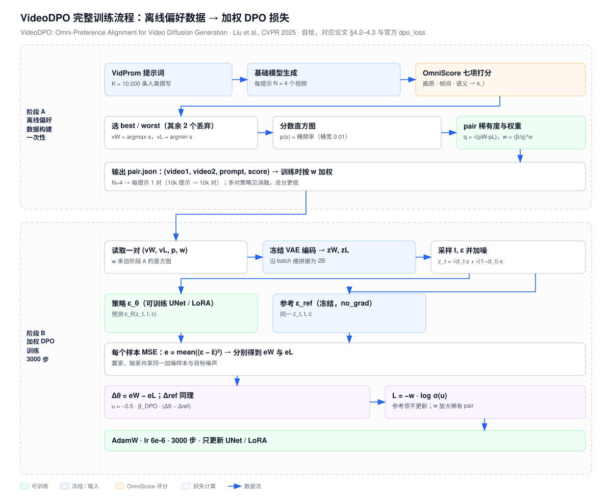
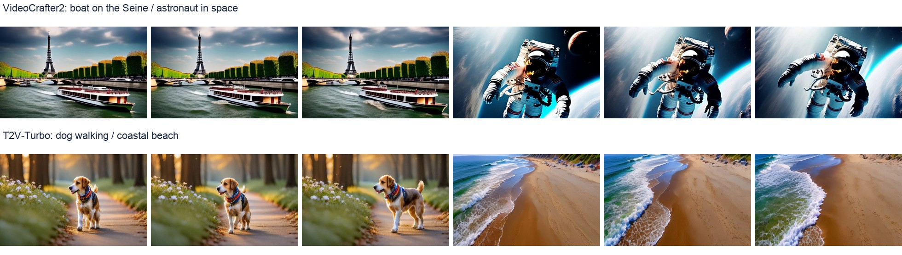
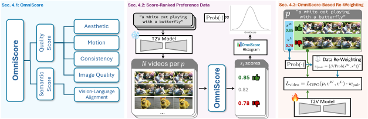
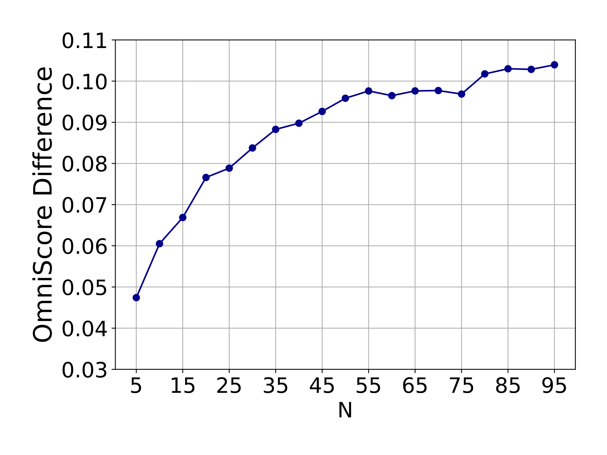
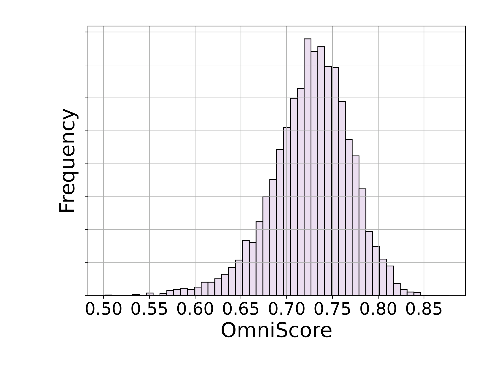
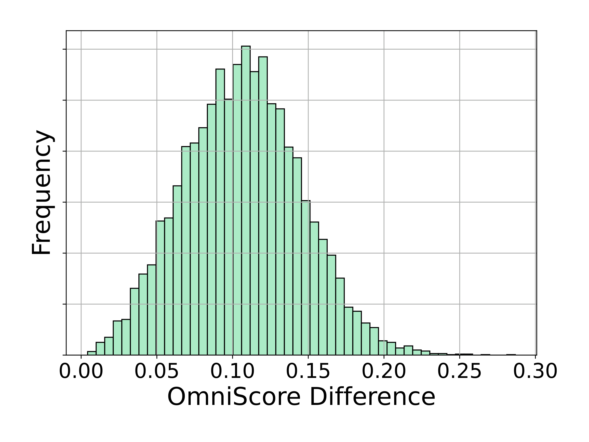
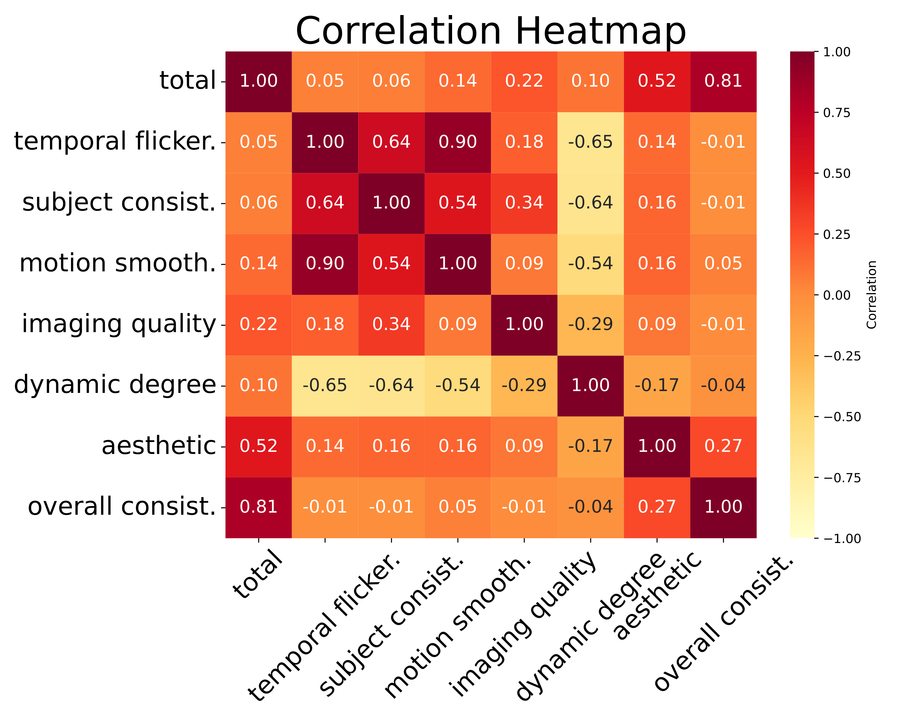
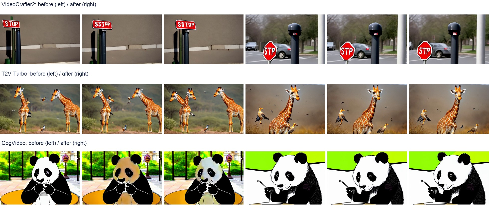

🎬 费曼一分钟
把视频生成模型当成学生：给同一道题（提示词），让它用不同随机种子交四份答案（视频）。自动阅卷系统 OmniScore 同时看画面质量、帧间运动与文本匹配，选出最高分和最低分的视频。训练时不再重新生成整段视频，而是给保存的视频 latent 加噪，让可训练模型和冻结的参考模型分别预测噪声，用“赢家与输家的去噪误差差，相对于参考模型改善了多少”构建偏好损失。
VideoDPO 的特色不只是把 DPO 搬到视频，还在于自动选对和重加权：对分数落在罕见区间的视频对赋予更高训练权重。与 DDPO 在线生成轨迹、拿奖励更新不同，它主要是离线偏好对学习。无需额外人工逐对标注，不等于没有预训练数据或人工反馈来源；自动评分器本身仍来自外部训练资源。
阅读范围：arXiv:2412.14167 的重点章节与段落、论文附录及官方仓库。左栏为可追溯英文摘录（省略引用编号，展开 LaTeX 宏）；中栏逐段翻译；右栏区分作者主张、数据证据和读者解释。长公式放全宽块，避免三栏错位。本文不将原文简写的 DPO 公式当作完整工程实现。

Abstract
While text-to-video models trained on large-scale, diverse datasets can produce varied outputs, these generations often deviate from user preferences, highlighting the need for preference alignment on pre-trained models.
尽管在大规模多样化数据集上训练的文生视频模型能够产生多样输出，这些生成结果仍经常偏离用户偏好，凸显了对预训练模型进行偏好对齐的必要性。
预训练解决“能生成什么”，后训练解决“更倾向生成什么”。这与 DPO、InstructGPT 的行为选择问题同源，但视频增加了时间一致性要求。
Unlike previous image alignment methods that focus solely on either (i) visual quality or (ii) semantic alignment between text and videos, we comprehensively consider both dimensions and construct a preference score accordingly, which we term the OmniScore. We design a pipeline to automatically collect preference pair data based on the proposed OmniScore and discover that re-weighting these pairs based on the score significantly impacts overall preference alignment.
不同于以往仅关注（i）视觉质量或（ii）文本与视频语义对齐其中一方面的图像对齐方法，我们综合考虑两个维度，并据此构建偏好分数，称为 OmniScore。我们设计了基于 OmniScore 自动收集偏好对数据的流水线，并发现依据分数对这些样本对进行重加权，会显著影响整体偏好对齐。
OmniScore → 自动偏好数据 → 加权训练。不是新训一个奖励神经网络，也不是给每个去噪步骤在线奖励。其“兼顾各维度”的主张，后面要由总分与子分共同检验。

1. Introduction
Specifically, two types of low-quality data are prevalent. First, regarding the videos themselves, some samples suffer from low resolution, blurriness, and temporal inconsistencies, which negatively impact the visual quality of generated videos. Second, regarding text-video pairs, mismatches between text descriptions and video content reduce the model’s ability to be controlled accurately through text prompts.
具体而言，有两类低质量数据普遍存在。第一，就视频本身而言，一些样本存在低分辨率、模糊和时间不一致问题，负面影响生成视频的视觉质量。第二，就图文视频对而言，文本描述与视频内容不匹配，降低了通过文本提示准确控制模型的能力。
画面漂亮但题不对，以及题对但闪烁模糊，是两种不同失败。一个单一的美学打分器无法自动解决另一类问题。这里是多维评分的动机，不是所有既有方法都只看一维的普遍定理。
Second, obtaining preference annotations for generated videos is challenging due to the high cost of human labeling. To address this, we propose a pipeline that automatically generates preference pair data by strategically sampling from multiple videos conditioned on a given prompt, thereby eliminating the reliance on human annotation.
第二，由于人工标注成本高，为生成视频获取偏好标注具有挑战性。为解决这一问题，我们提出一条流水线：针对给定提示词，从多个条件生成视频中有策略地取样，自动生成偏好对数据，从而不再依赖人工标注。
这里免除的是本任务的新增逐对人工标注，不能读成“完全无人类知识”。自动评分器仍是人为选择并训练的。它产生的是评分器偏好，是否等于部署用户的偏好，还需独立评估。

2. Related Work
DPO is a reward model free method that can be easily performed on diffusion models. Despite the DPO-based methods being tested on text-to-image diffusion models and gaining significant process, it has been rarely tested on T2V diffusion models.
DPO 是一种无需奖励模型的方法，可以方便地用于扩散模型。尽管基于 DPO 的方法已在文生图扩散模型上得到测试并取得显著进展，但它很少在文生视频扩散模型上接受测试。
原文的 reward model free 指偏好损失不需要显式训练奖励模型再做在线 RL；VideoDPO 构建离线数据时仍使用 OmniScore。VADER/T2V-Turbo 的可微奖励路线，则直接从分数反传。不要把 VideoDPO 等同于 DDPO 的 PPO 式训练。
3. Preliminaries
The denoising model εθ, which learns to predict the noise added to x₀ for timestep t, is trained by minimizing the loss between the ground-truth ε and prediction.
去噪模型 εθ 学习预测在时间步 t 向 x₀ 添加的噪声，其训练通过最小化真实噪声 ε 与预测值之间的损失完成。
把视频编码为 latent z，再人为添加已知噪声 ε；模型猜噪声，猜得越接近误差越小。此处的 x₀ 可以是离线生成的视频，不一定是现实拍摄的视频。左栏将原文数学符号转写为文本，完整式子见下方。
ᾱₜ 控制保留原信号的比例；ε 是已知的标准高斯噪声。原文上一式 q(xₜ|xₜ₋₁) 实际描述正向加噪，不能误读为逆向生成。代码在 latent 空间工作，文本条件在原文简式中省略。
Training on pairs of generated samples with positive and negative labels, the model learns to generate positive samples with higher probability and negative samples with lower probability.
通过在带有正负标签的生成样本对上训练，模型学习以更高概率生成正样本，以更低概率生成负样本。
严格说，DPO 鼓励赢家对输家的相对偏好改善，并非保证每个赢家的绝对概率都上升。VideoDPO 的 Preliminaries 只写 L(xW,p)−L(xL,p)；这不是包含参考项、sigmoid 和尺度的完整 DiffusionDPO 损失。完整计算要对照 #code。
4. VideoDPO
The quality of generated videos is influenced by multiple factors, which can be grouped into two main categories: visual quality and semantic alignment. Visual quality includes the clarity and richness of detail within each frame, i.e., intra-frame quality, and the smoothness and coherence between frames, i.e., inter-frame motion and consistency. Semantic alignment, on the other hand, focuses on whether the generated video accurately follows the text prompt.
生成视频的质量受多种因素影响，可分为两大类：视觉质量和语义对齐。视觉质量包含单帧内的清晰度与细节丰富度，即帧内质量，以及帧间的平滑度与连贯性，即帧间运动和一致性。另一方面，语义对齐关注生成视频是否准确遵循文本提示。
主文提到背景一致性；附录最终列出七个实际子分数，未单列背景一致性。下面依据附录明确枚举。多指标求和是手工标量化取舍，不是“所有维度必然同时改善”。
OmniScore 七项：附录明确列出的评分器
| 子分数 | 模型/方法 | 权重 |
|---|---|---|
| 运动平滑 | AMT 插帧运动先验 | 4 |
| 时间闪烁 | RAFT 选静态帧 + 帧间平均绝对差 | 4 |
| 主体一致性 | DINO 跨帧特征相似度 | 4 |
| 成像质量 | MUSIQ（SPAQ 训练） | 4 |
| 美学质量 | LAION aesthetic predictor | 4 |
| 运动程度 | RAFT 光流 | 4 |
| 视频文本对齐 | ViCLIP overall consistency | 1 |
附录将主体一致性、闪烁、运动平滑、overall consistency 分别用给定 min/max 缩放到 [0,1]。不能直接把七项未校准原始分数相加；最终需核对评分数据的归一化与高低方向。
Given a text prompt p, we generate a set of N videos {v₁, v₂, …, vN}, using the pre-trained video generation model that we aim to align. For each generated video vi, we apply the OmniScore model S to evaluate its quality conditioned on the text prompt p.
给定文本提示 p，我们使用待对齐的预训练视频生成模型，生成 N 个视频 {v₁, v₂, …, vN}。对于每个生成视频 vi，我们用 OmniScore 模型 S 在提示词 p 的条件下评价其质量。
VidProm 提供真实用户撰写的提示词；候选视频由同一个待对齐基础模型生成。并不要求两个模型，也没有配对的真实目标视频。N=4、K=10,000，因此每个基础模型的数据构建预算约为 40,000 个候选视频。
同一提示词的 N 个视频按分数排序，只保留最高分与最低分一对。K 个提示词产生 K 对，不是 N×K 对。并列分数如何处理，正文没有给出统一规则。
By constructing preference pairs consistently with maximally contrasting scores, we aim to establish clear distinctions between the preferred, or winning, and the less-preferred, or losing video samples. This strategy serves as a strong foundation for training the alignment model.
通过始终用对比最强的分数构建偏好对，我们希望在较受偏好的赢家视频与较不受偏好的输家视频之间建立清晰区别。这一策略为训练对齐模型提供了有力基础。
N=4 只输出 1 对。Best-vs-Worst 只取最高分与最低分，中间 2 个直接丢弃。K=10,000 提示词 → 10,000 对，不是 40,000 对。pair.json 每条记录只有 video1 / video2，就是这个原因。
能否多对：可以。论文消融给了三种多对策略（N=4 时）：Better-Worse 取所有 si > sj 的组合，最多 6 对；Best-Worse 用最高分配其余 3 个，3 对；Better-Worst 用最低分配其余 3 个，3 对。VBench 总分分别为 81.32 / 80.80 / 80.73，都低于单对的 81.93。
为什么单对更好。多对会把同一提示词重复计入多次，并混入大量分差很小的弱对，稀释「清晰对比」这一信号。作者的结论是「对齐效果取决于偏好对的平均质量，而非绝对数量」。这是本设定、本评分器下的经验结果，不是普遍定律。
代价。丢弃的 2 个视频仍消耗了生成与打分算力。若想复用，可改成多对或按分差加权，但需重新验证是否值得。
For each winning-losing pair, we define the pair probability as the geometric mean of their individual probabilities, i.e., prob(sW, sL) = √(p(sW) · p(sL)).
对于每个赢家—输家对，我们把样本对的概率定义为各自概率的几何平均，即 prob(sW, sL) = √(p(sW) · p(sL))。
p(s) 来自全部 K×N 视频分数的直方图频率。它既不是模型的 pθ(v|p)，也不是人类偏好概率。所谓“pair probability”是作者定义的稀有度统计量，几何平均不是两事件独立时的联合概率。
为避免符号混淆，这里把原文重加权常数 β 标为 β_hist，它不是代码的 beta_dpo，也不是加噪方差 βₜ。α=0 时所有权重为 1；α 越大，低频分数组成的对权重越大。低频不严格等于大分差：两个非常接近的尾部分数也可能获得高权重。
A larger α increases the weight for pairs with lower probability.
更大的 α 会提高低概率样本对的权重。
大分差选对与低频加权是两个不同步骤。比如两个分数所在桶频率均为 0.1，qpair=0.1；均为 0.01 则 qpair=0.01，相同 βhist、α=1 下第二对权重为第一对的 10 倍。与 DDPO 的新旧策略重要性比完全不同，这里是离线损失权重。
💻 代码对照：离线视频对 → 参考校准的去噪误差差
官方仓库：CIntellifusion/VideoDPO。以下基于本次读取的 main 源码，摘录与教学伪代码明确区分。仓库 README 公开 VideoCrafter2 与 T2V-Turbo 训练，CogVideoX 代码仍列 TODO；不能把论文表中的 CogVideo 自动改写成 CogVideoX。
| 论文步骤 | 官方文件 / 符号 | 实现重点 |
|---|---|---|
| 读取赢家/输家 | data/video_data.py · TextVideoDPO | pair.json 的 video1/video2/frame_caption/score；返回 video/caption/dupfactor |
| 编码和加噪 | lvdm/models/ddpm3d.py · get_batch_input / q_sample / p_losses | 赢家输家先沿通道拼接，再转换为 2B 的 batch；VAE 编码 latent |
| 参考预测 | ddpm3d.py · shared_ref_pred | 固定 ref_model；部分 LoRA 分支通过关闭适配器得到参考输出 |
| 加权损失 | ddpm3d.py · dpo_loss | model_diff − ref_diff → -0.5×beta_dpo → -logsigmoid → 乘 dupfactor |
| 直方图权重工具 | OmniScore/visualize_pair_prob.py | 当前文件主要是注释/草稿，不能当作可运行的完整 OmniScore 构建脚本 |
① 数据读取与权重：真实源码节选
# data/video_data.py · TextVideoDPO.__getitem__
videowidx, videolidx, frame_caption, prob_score = self.pairs[index]
dupfactor = (0.72 / prob_score) ** self.dupbeta
videow = self.data[videowidx]["video"]
videol = self.data[videolidx]["video"]
combined_frames = torch.cat([videow, videol], dim=0)
return {"video": combined_frames,
"caption": frame_caption, "dupfactor": dupfactor}原文实现段写 α=0.72、β=1，但此代码的 0.72 是分子常数，dupbeta 是指数；消融表又写 α=1 为 Ours。三者口径不一致，不能静默合并。复现时必须核对实际配置和 pair.json 的 score：数据类只消费这个字段，不在这里计算直方图几何平均。
② 加噪和参考模型：教学伪代码，不是逐行摘录
# 一个离线训练 batch；不做完整逆向生成，不重新调用 OmniScore
z_w = vae.encode(video_w).detach() # [B,C,F,H,W]
z_l = vae.encode(video_l).detach()
z = cat([z_w, z_l], dim=0) # [2B,C,F,H,W]
t = sample_training_timesteps(z.shape[0])
eps = randn_like(z)
z_t = sqrt(alpha_bar[t]) * z + sqrt(1-alpha_bar[t]) * eps
pred = policy(z_t, t, repeat_prompt_embeddings(c))
with no_grad():
ref_pred = reference(z_t, t, repeat_prompt_embeddings(c))关键是 policy 与 reference 对同一批 z_t、t、ε 做比较。官方 forward 默认逐样本取随机 t，不能无证据声称赢家与输家一定共享相同 t/ε。离线视频作为当前的“干净样本”，噪声 ε 是人为添加且已知的监督目标。
③ 偏好损失：真实 dpo_loss 核心摘录
# lvdm/models/ddpm3d.py · dpo_loss
model_losses = (pred - target).pow(2).mean(dim=[1, 2, 3])
model_losses_w, model_losses_l = model_losses.chunk(2)
model_diff = model_losses_w - model_losses_l
with torch.no_grad():
ref_losses = (self.ref_pred - target).pow(2).mean(dim=[1, 2, 3])
ref_losses_w, ref_losses_l = ref_losses.chunk(2)
ref_diff = ref_losses_w - ref_losses_l
inside_term = -0.5 * self.beta_dpo * (model_diff - ref_diff)
loss = (-self.dupfactor * F.logsigmoid(inside_term)).mean()重要实现检查：若张量按常见 [2B,C,F,H,W] 排列，mean([1,2,3]) 保留 W 维；这不是“所有非 batch 维取均值”。权重 shape 与广播要按实际分支检查。本页是源码对照，不宣称已经运行模型训练或验证所有分支正确。
这是对已读取代码的教学表达，不是照抄原文 Preliminaries 简式。赢家误差相对输家降低，且改善超过 reference，则 Δθ−Δref 为负、u 变大、损失降低。模型学的是相对差，不是单独最小化赢家 MSE、无限最大化输家 MSE。上式省略 batch、t 权重和具体张量归约，完整复现以实际代码分支为准。
④ 用一个数字例子理解符号：教学伪代码
# 基础参考：赢家误差 3，输家误差 5 -> ref_diff = -2 # 当前模型：赢家误差 2，输家误差 6 -> model_diff = -4 ref_diff = 3 - 5 model_diff = 2 - 6 u = -0.5 * beta_dpo * (model_diff - ref_diff) # 正值 loss = pair_weight * softplus(-u) # 等于 -w*log(sigmoid(u)) # 如果当前模型与 reference 完全相同，则 u=0，损失为 w*log(2) # 初始损失不是 0；此时仍可通过 policy 分支产生梯度。
βDPO 控制偏好 logit 的尺度；pair_weight 控制该对的整体梯度权重。reference 不更新。这里的预测噪声和误差都可微，但 OmniScore 不需要参与训练时反向传播。
5. Experiment
We train the video diffusion models for 3000 steps with a global batch size of 8, using the AdamW optimizer with a learning rate of 6e-6. During training, the re-weighting algorithm hyper-parameters are set to α=0.72 and β=1. K=10,000 human-written prompts from VidProm are used for alignment training. For each prompt, the number of generated videos N is set to 4. The bin width for the distribution of video OmniScore scores is set to 0.01. All experiments are conducted on 4 Nvidia A100 GPUs.
我们用全局 batch size 8 训练视频扩散模型 3000 步，优化器为 AdamW，学习率为 6e-6。训练时重加权超参数设为 α=0.72、β=1。对齐训练使用 VidProm 中 K=10,000 条人类撰写提示词。每条提示生成 N=4 个视频。视频 OmniScore 分布的直方图桶宽为 0.01。所有实验均在 4 张 Nvidia A100 GPU 上完成。
主文配置按原样保留。α 数值与消融表、数据类常数位置不一致，#code 已列出。40,000 次候选视频生成以及多评分器成本不包括在 3000 个更新步中；离线不是没有采样成本，只是把成本放到了训练之前。
We analyze the dataset by examining the OmniScore distribution, the score range, i.e., the difference between maximum and minimum scores, for each prompt, and the correlations among individual scoring metrics. To quantify these correlations, we calculate Pearson correlation coefficients.
我们通过考察 OmniScore 分布、每条提示词的分数范围（即最高分与最低分之差）以及各评分指标之间的相关性来分析数据集。为量化这些相关性，我们计算 Pearson 相关系数。
分差衡量同题答案能否拉开；直方图衡量某个分数区间是否常见；相关性说明某个指标是否能替代另一个指标。低相关支持多维测量，但不能单凭相关性证明当前加权系数最优。




Table 1：主实验数字，不用总分掩盖退步
| 基础模型 / 方法 | VBench 总分 | 质量 | 语义 | HPS(V) | PickScore |
|---|---|---|---|---|---|
| VC2 Baseline | 80.44 | 82.20 | 73.42 | 0.258 | 20.65 |
| VC2 SFT | 78.78 | 79.90 | 74.32 | 0.258 | 20.35 |
| VC2 VADER（原表写 VADAR） | 80.59 | 82.46 | 73.09 | 0.259 | 20.62 |
| VC2 VideoDPO | 81.93 | 83.07 | 77.38 | 0.261 | 20.65 |
| Turbo Baseline | 80.95 | 82.71 | 73.93 | 0.262 | 21.15 |
| Turbo VideoDPO | 81.80 | 83.80 | 73.81 | 0.260 | 21.18 |
| CogVideo Baseline | 79.30 | 82.35 | 67.10 | — | 19.81 |
| CogVideo SFT | 79.64 | 82.74 | 67.23 | — | 19.79 |
| CogVideo VideoDPO | 79.80 | 83.00 | 66.99 | — | 19.79 |
VBench 为百分数；变化以百分点描述。VC2 总分 +1.49、语义 +3.96；Turbo 总分 +0.85，但语义 −0.12、HPS −0.002；CogVideo 总分 +0.50，但语义 −0.11、PickScore −0.02。表中没有置信区间，不能把很小差异自动称为统计显著。
After alignment using our approach, all models show performance improvements, with consistent gains on the VBench metric. Models such as VC2 and T2VTurbo also achieve higher scores on human preference metrics, including HPS (V) and PickScore, demonstrating the generalizability of our approach.
经过我们的方法对齐后，所有模型都表现出性能提升，在 VBench 指标上获得一致收益。VC2 和 T2VTurbo 等模型在人类偏好指标（包括 HPS (V) 和 PickScore）上也获得更高分数，体现了我们方法的泛化性。
“consistent gains”能由三个模型的VBench 总分支持，但不能扩展成“所有偏好维度均提升”。Turbo 的 HPS 实际下降，CogVideo 的 PickScore 下降；VC2 的 PickScore 持平。保留原文，让读者看到叙述与证据边界。

The “Best-vs-Worst” strategy, adopted by us, pairs only the highest and lowest-scoring videos and outputs 1 preference pair for a prompt. The experiments show that this strategy, which generates only the most distinctive pair, yields the best performance.
我们采用的“Best-vs-Worst”策略只将最高分与最低分视频配对，每条提示词输出 1 个偏好对。实验显示，这种只生成对比最鲜明样本对的策略获得最佳表现。
配对消融支持每提示一对的选择：best/worst 总分 81.93，better/worse 81.32，best/worse 80.80，better/worst 80.73。它不证明“多样本永远无用”，因为噪声、提示覆盖、重复权重与预算会共同影响结果。
However, the results show that excluding these training samples led to worse performance. This may be because the removal of these pairs, also including the prompts, reduced the diversity of the training data, leaving the model with many prompts it had not seen before and weakening its alignment performance.
然而，结果表明排除这些训练样本会使表现变差。可能的原因是，删除这些样本对也删除了对应提示词，降低训练数据多样性，使模型面对许多从未见过的提示词，削弱了对齐表现。
“可能因为多样性下降”是作者解释，不是已隔离验证的因果。删去弱对同时删掉 prompt，因此这里支持保留覆盖，但还缺少固定 prompt 集合的过滤对照。
At α=2, we observe a significant increase in semantic performance but a decrease in quality performance on VBench, resulting in the same total score as achieved with α=1.
在 α=2 时，我们观察到 VBench 语义表现显著增加，但质量表现下降，最终总分与 α=1 相同。
α=1 与 α=2 总分均 81.93；质量 83.07→82.52，语义 77.38→79.59。加权更强不是所有方面更好。此处原文使用 significant，但未提供显著性检验，宜理解为幅度描述。
消融摘要：Table 3 与附录
| 实验 | 设置 | VBench Total | 解释 |
|---|---|---|---|
| α | 0 / 0.5 / 1 / 2 | 80.89 / 81.51 / 81.93 / 81.93 | 加权有效；更强加权有质量语义取舍 |
| 候选数 N | 2 / 3 / 4 | 80.89 / 81.51 / 81.93 | 同提示增加候选能提高可用对比 |
| 删除弱对 | 75% / 50% / 25% / 不删 | 80.08 / 81.29 / 81.42 / 81.93 | 删对也删提示，存在覆盖混淆 |
| 评分组合 | 仅语义 / 仅美学 / OmniScore | 80.20 / 79.65 / 81.93 | 综合评分在本设定更好 |
| 按单维度各选对再合并 | 40,000 对 | 78.26 | 数量更多不等于标签更协调 |
注意 α 和 N 消融前两行若干数字完全相同，本文照抄原始表，不把重复数字视为额外独立验证；需要复现或作者说明。
6. Conclusion
VideoDPO introduces a comprehensive scoring method, OmniScore, along with a novel data reweighting strategy that automatically constructs and prioritizes preference data, enabling more effective alignment training.
VideoDPO 引入综合评分方法 OmniScore，以及一种新的数据重加权策略，用于自动构建偏好数据并确定其优先级，从而实现更有效的对齐训练。
本质贡献集中在“怎样制造更有效的离线偏好监督”。范围限于给定评分器、候选生成模型与 VidProm 提示分布。自动标签错误、稀有分数过度加权、运动质量退化、OOD 用户偏好，都需要独立研究，不能被总分结论覆盖。
符号速查与三种 β
| 符号 | 含义 |
|---|---|
| p / c | 文本提示；注意 p(s) 中的 p 是频率函数，而不是提示字符串 |
| vW / vL | 同题候选中最高分与最低分视频 |
| S / si | OmniScore 评分器 / 候选分数 |
| K / N | 提示词数量 / 每提示候选数；主实验 10,000 / 4 |
| p(s) | 分数所在直方图桶的经验频率，不是生成模型密度 |
| qpair | √(p(sW)p(sL))：作者定义的 pair 稀有度 |
| α / dupbeta | 重加权指数；论文与代码配置存在口径差异 |
| βhist | 重加权分子常数；代码数据类硬编码 0.72 |
| βDPO / beta_dpo | 偏好 logit 尺度；与直方图常数不同 |
| βt / ᾱt | 正向加噪方差 / 累计信号保留比例 |
| εθ / εref | 可训练模型 / 固定参考模型的噪声预测 |
论证结构总览
🧩 结构化十问
Q1 · 解决什么问题？
Q2 · 与 DDPO 有何区别？
Q3 · 训练数据是什么？
Q4 · 4 个视频为什么只留 2 个？能多留吗？
Q5 · OmniScore 等于训练奖励模型吗？
Q6 · 重加权到底按什么？
Q7 · 模型怎样知道赢家更好？
Q8 · 实验是否所有维度都变好？
Q9 · 能直接复现吗？
Q10 · 下一步值得研究什么？
🔬 深挖：哪些结论还不能直接接受？
一、频率加权为何不等于大分差加权？
选对时 argmax/argmin 最大化同题分差；权重却只看两个端点的全局频率。两个同处罕见尾部、分数接近的视频，也可能得到很高权重。需要把 score gap、tail rarity 与 label confidence 分别测量。
二、同一评分体系用于构对与评估，有什么风险？
OmniScore 借鉴 VBench 的模型，评估又主要用 VBench，可能对共享测量机制产生适配。并不等于训练作弊，但结论需要独立评价器、人类盲测或运动专项测试支持。
三、指标标量化的盲区
附录六个视觉维度权重均为 4，语义维度为 1；这是价值取舍，不是中性真值。平均总分会掩盖 motion smoothness、dynamic degree 或文本匹配退步。应同时报告分维度指标与样本级错误。
四、公开实现与论文定义的距离
Preliminaries 的 DPO 简式缺少 reference 与 sigmoid；α=0.72/1 与代码常数位置不一致；5D 张量误差归约和权重广播需验证。仓库 main 可变，本页不承诺它等于作者最终实验配置。
五、为什么离线 DPO 仍有覆盖限制？
只在离线候选提供的赢家输家关系上学习，没有 DDPO/GRPO 式在线探索。训练可以重组已有能力，却不能保证发现候选集外的新行为。更强模型混合、迭代生成数据和 online RL 都是后续路线，不是本文已经证明的结论。